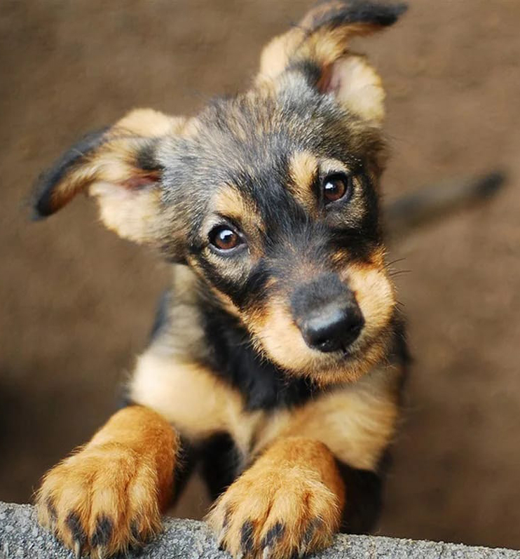
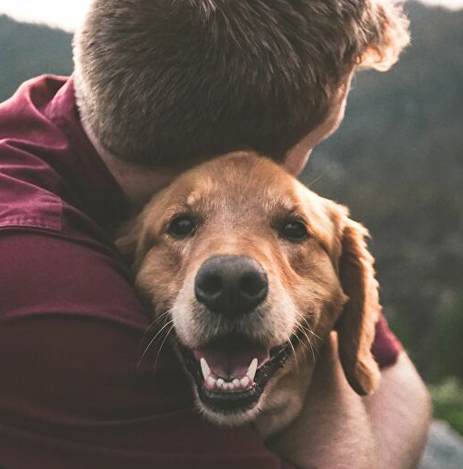
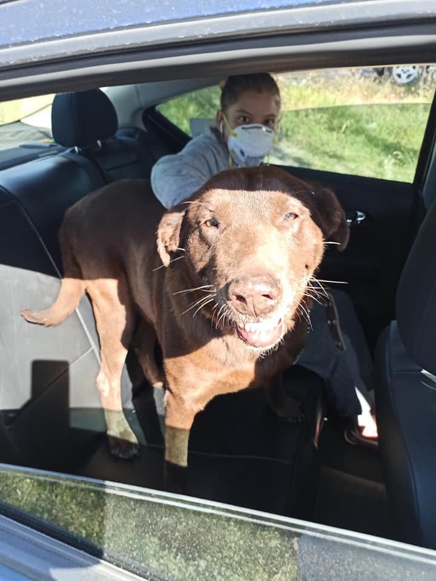
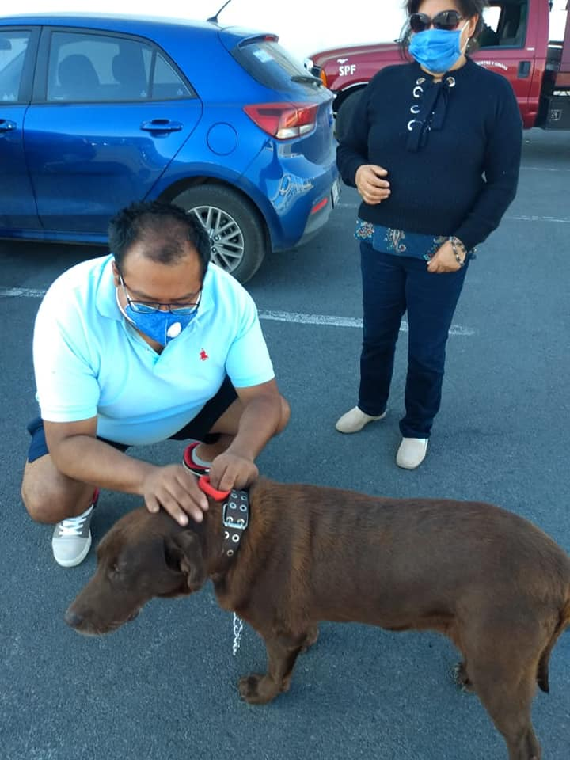
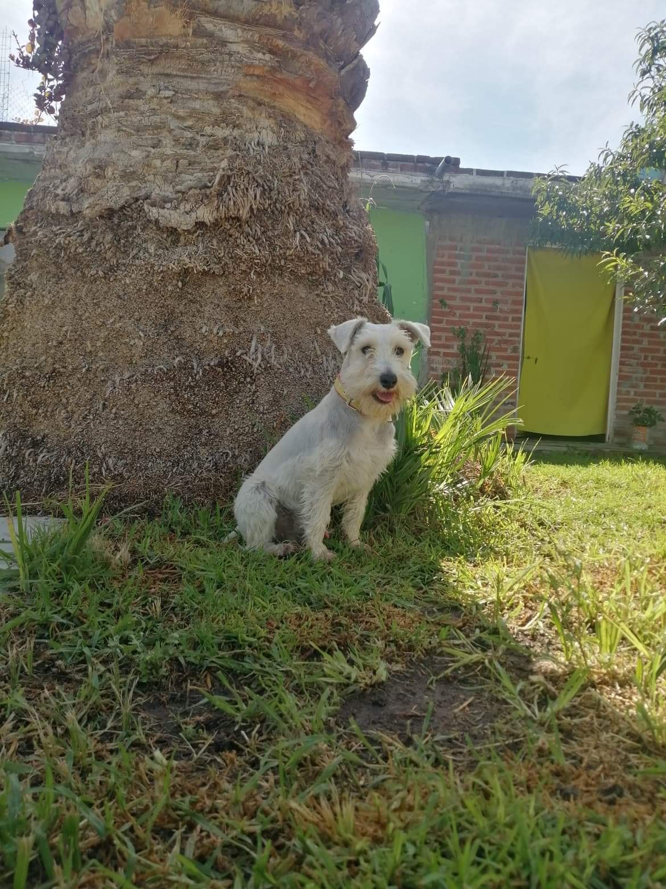
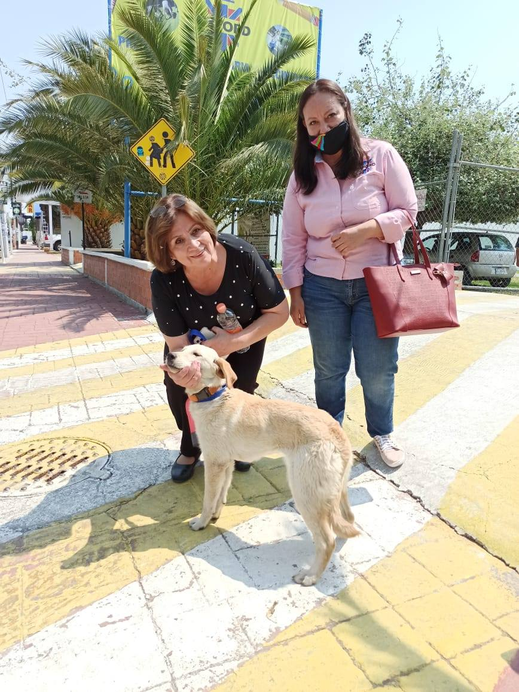
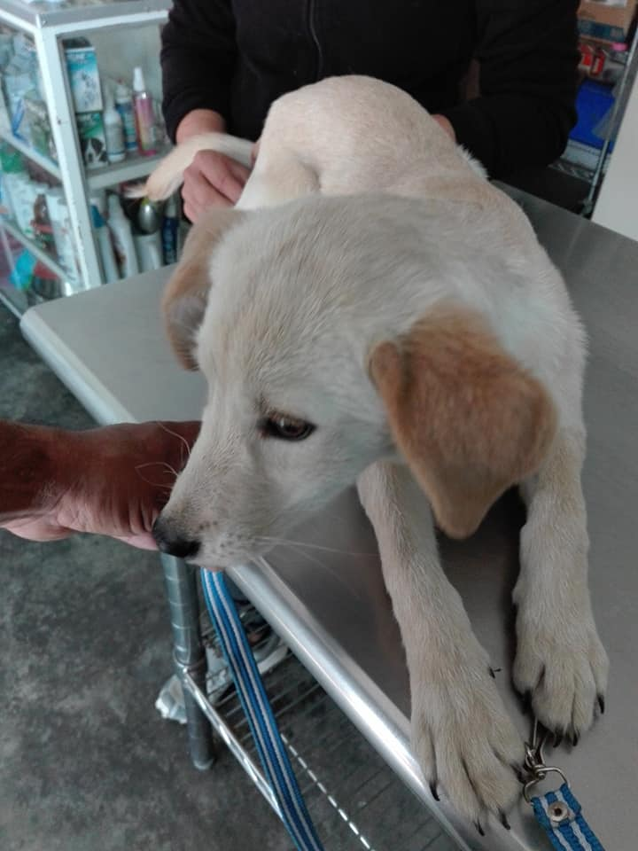
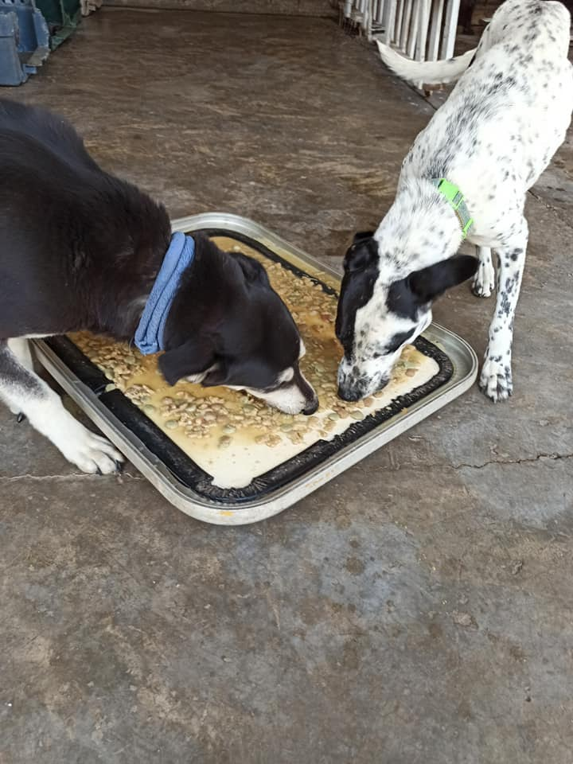

Los animales comparten con nosotros el privilegio de tener Alma.
Nosotros
Animales Sin Nombre:Organización abocada a la protección y rescate de animales en situación de calle, abandonados, maltratados o enfermos Rehabilitarlos y buscarles hogar.
Leer Más

Información
La protección de los animales y el bienestar de los mismos es un problema social que requiere la participación responsable de cada ciudadano. Existe un gran número de animales de compañía que son abandonados por sus dueños cada año.

¿Cómo ayudar?
Hacé tus donaciones a través de diferentes métodos de pago o dona insumos médicos.
Leer MásEducá, Protegé y Adoptá
- 
- 
- 
- 
- 
- 